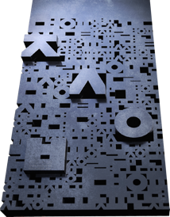

수장품 접수안내
타임캡슐에 넣고 싶은 물건 또는 파일을 우편이나 이메일로 접수하실 수 있습니다. 접수시 신청항목의 인적사항을 작성해주시고 개봉둥이를 지정하여 전달해주세요. 보관하신 수장품은 2070년 3월 5일 개봉 시점에 본인 또는 개봉둥이가 돌려받게 됩니다. 관련기사
- 접수 마감
- 2020년 10월 20일까지(우체국 소인분까지)
조선일보 본사 편집동 앞 잔디마당에 설치됩니다.

접수 시 쓰실 내용
-
01
기록물에 담긴 사연 또는 의미
-
02
신청자 정보
성명, 연락처(휴대전화 등), 이메일, 연령, 주소
-
03
50년 후 받을 사람(개봉둥이)
성명, 연락처
물건으로 접수
신청 내용과 실물을 함께 넣어 동봉해 택배 또는 등기우편으로 보내주세요.
- 보내실 곳
- (04519) 서울 중구 세종대로 21길 30 조선일보 100주년 위원회 사무국
잠깐! 유의사항을 확인해주세요.
- ・실물의 규격은 가로 10cm · 세로 10cm · 높이 5cm 이내
- ・사진, 편지, 원고 등은 규격 제한 없음
- ・귀중품, 부패가 염려되는 물품 등은 접수불가
영상과 사진 데이터 접수
신청 내용을 작성한 이메일에 영상 또는 사진 데이터 파일을 첨부하여 보내주세요.
- 이메일
- 150@chosun.com
잠깐! 유의사항을 확인해주세요.
- ・첨부파일 용량은 500mb 이내
- ・첨부파일 형식은 사진 jpg, png, gif / 영상 mp4, avi 등
- ・개인정보수집 동의 안내시 접수 가능 상세보기
개인정보수집 동의 안내
개인정보를 수집하는 목적은 타임캡슐 행사의 진행을 위해 행사 참여자의 신원 확인과 정보 관리를 위한 것입니다. 또한 2070년 3월 5일까지 보관한 후 반환할 대상자의 신원 및 반환할 이메일 주소 등을 확보하기 위해서입니다. 수집된 개인정보는 2070년 3월 5일로 예정된 타임캡슐 보관기간이 종료하고 반환 대상자에게 반환이 완결된 것을 확인하면 관련 개인정보는 확인 즉시 파기하게 됩니다. 이상과 같이 명시된 사항은 타임캡슐 행사에 참여하는 당사자가 타임 캡슐의 공식 이메일인 150@chosun.com 으로 관련 내용을 보냄과 동시에 ‘개인정보수집’ 관련 사항에 동의하시는 것으로 간주됩니다.
- * 필수정보의 누락 또는 유의사항 조건에 맞지 않는 내용물의 경우 최종 접수가 반려됩니다.
- * 보내주신 내용물은 수장품으로 채택하기 위해 본사가 개봉하되, 대외적으로는 공개하지 않습니다.
- * 채택되지 않은 수장품은 다시 돌려드리며, 수장품으로 채택되신 분에게는 인쇄물 또는 디지털파일 형태의 수장증서가 발급됩니다.